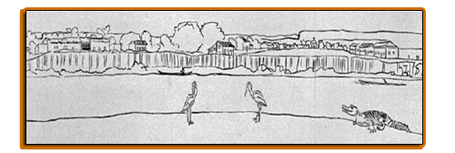
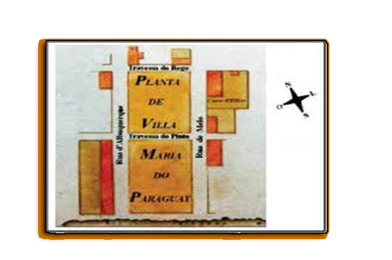
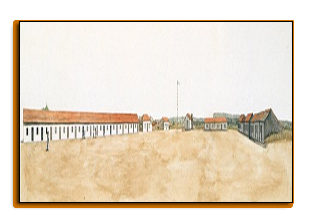

VILA MARIA DO PARAGUAI, ATUAL CÁCERES

Figura 01: Desenho de Vila Maria do Paraguai em 1827
Fonte: Hercule Florence, 1827.
O francês Hercule Florence
[1], integrante da expedição russa chefiada pelo Barão G.H. Von Langsdorff, que visitou o império brasileiro entre os anos de 1822 a 1829, esteve em Vila Maria no ano de 1827 e, traçou uma panorâmica da povoação. Antes se hospedou na fazenda Jacobina, onde conheceu a propriedade de João Pereira Leite, que lhe causou grande admiração a extensão territorial e, cuja população de escravos e agregados era superior a de Vila Maria.
A partir da ilustração panorâmica feita de Vila Maria por Florence, aliada ao estudo de Natalino Ferreira Mendes (2009), nos ajuda pensar a criação de Vila Maria e sua introdução no contexto da colonização europeia.
No contexto global de colonização portuguesa da parte sul do continente americano surge a Vila Maria (atual Cáceres), para constituir-se parte da fronteira Oeste com as colônias espanholas na capitania de Mato Grosso. O professor Natalino Ferreira Mendes (2009) em sua obra
História de Cáceres: História da Administração Municipal, relata:
No dia 6 de outubro de 1778, Luiz de Albuquerque de Mello Pereira e Cáceres faz fundar a povoação que se denominou Vila Maria do Paraguai, em homenagem à rainha reinante, D. Maria I, situada na margem oriental do rio Paraguai, sete Léguas ao norte da foz do Jauru e na confluência dos rios Sepotuba e Cabaçal, no caminho de Vila-Bela para Cuiabá [...] (MENDES, 2009, p. 27).
A localização da vila, foi indicada pela Coroa portuguesa para ser efetuada num lugar estratégico para os interesses geopolítico, econômico e social. Sendo um entreposto entre a Capital da Capitania de Mato Grosso, Vila Bela da Santíssima Trindade e a Vila Real do Senhor Bom Jesus do Cuiabá. A historiografia sobre o período colonial indica que a fundação de vilas, como Vila Maria, tinha o objetivo de defender os interesses da coroa portuguesa diante dos espanhóis, baseando-se no princípio do
uti possidetis.
Nesta teia de interesses portugueses comandada pelo capitão-general Luiz de Albuquerque de Melo Pereira e Cáceres, a vila que já existia, foi oficializada em 06 de outubro de 1778, conforme registra o Termo de Fundação. Nesse documento oficial da Coroa portuguesa foram registradas as presenças de diversos indígenas oriundos de Missões da província de Chiquitos. Num trecho do Termo de Fundação escrita em 1778 por Domingos Ferreira Costa, posteriormente publicada na Revista do Instituto Histórico e Geográfico Brasileiro em 1865, estava escrito:
[...] para com effeito fundar, erigir e consolidar uma povoação civilisada, aonde se congregassem todo o maior numero de moradores possivel, comprehendidos todos os casaes de indios castelhanos proximamente desertados para este domínios portuguezes da provincia de chiquitos [...] (REVISTA TRIMENSAL - IHGB, 1865, p.112). [2],
Nas correspondências trocadas entre as autoridades lusas, anotaram que a presença de indígenas das missões de jesuítas da província de Chiquitos nas proximidades da fronteira Oeste era uma situação constante. Esse flagrante foi descrito pelo Tenente de Dragões Antônio Pinto Rego e Carvalho, quando escreveu do Registro de Jauru, no dia 21
de julho de 1778, para o capitão-general Luiz de Albuquerque de Mello Pereira e Cáceres sobre as fugas de indígenas das missões espanholas de São João, São Rafael e Coração de Jesus. Populações e Missões que serão citadas na Ata Fundação de Vila Maria alguns meses depois. Segundo o tenente:
[...] Cinco Indios de Castella dois [da] Missaó de Saó Joaó, três de Saó Rafael [digo Missaó] do Coraçaó de Iezus [...]”. (CARVALHO, Antônio [1778], apud SOUSA, 2013, p. 105. Grifo do autor).
O mesmo documento registrou que havia mais indígenas dessas missões chegando à Vila Maria, fugindo dos maus tratos que vinham sofrendo das autoridades espanholas. Um relato de Antônio Carvalho, três dias após a primeira data de chegada (24 de junho de 1778), mais indígenas chegaram à Vila Maria:
|
[...] chegaraó aeste destacamento trinta e tres [Indio] vindos daMissaó deSaó de [Crastos] Como de[ec]laraó dizendo serem as [causas] de sua [f]ugida as mesmas dos muitos aSoutes que[declararaó os[dimais] que os dias passados [chedaraó] de que cientamente toma Parada que daqui [remete] dar parte aVossa[E]xcelencia. (CARVALHO, Antônio [1778], apud SOUSA 2013, p. 109. Grifo do autor).
Este documento evidencia que as autoridades portuguesas observavam com bons olhos o deslocamento desses indígenas para a fronteira Oeste, conforme relatou o Tenente Carvalho ao governador Capitão General Luiz de Albuquerque. Este enviou alimentos para alguns indígenas desse mesmo grupo, pois, haviam ficado para trás devido à precariedade e fome, na região de salinas. Escreve: “[...] lhe mandei hum pouco de [sentero] de farinha para [lheacudir] a dita fome que trazió [...]” (SOUSA, 2013, p. 109). Além de informar a necessidade de carne de gado bovino para todo o “lote”. Palavra usada pelo tenente para se referir aos indígenas.
Em outra correspondência enviada para Luiz de Albuquerque, datada em 12 de julho de 1778 (19 dias depois do documento manuscrito citado acima), Carvalho comunica que estão trabalhando na construção de novas casas e fazendo alguns reparos em outras casas no Registro do rio Paraguai. Expondo a escassez de ferramentas para realizarem os trabalhos de construções.
Nota-se que as autoridades estavam construindo um local estratégico para abrigarem os indígenas que vieram fugidos das missões espanholas, pois naquele local poderia ser “fazem huma boa [aldeã]”, conforme citou Antônio Carvalho (SOUSA, 2013, p. 111), ou uma vila para povoar. Acatando as ordens que havia recebido da Coroa portuguesa para defender as terras e manter longe, aos espanhóis.
Neste local, na bacia do Alto Paraguai foi edificada a Vila Maria, às margens esquerdas do rio Paraguai, por ordem de Luiz de Albuquerque de Mello Pereira e Cáceres. Moraes (2003, p.34) menciona que “[...] para a sua edificação, era plana, apresentando solos arenosos, mas cheios de pastagens. Seus recursos hídricos eram abundantes, tendo como referencial maior o rio Paraguai e seus afluentes”. Era um local com abundância de recursos naturais para atrair pessoas e garantir sua permanência. O carpinteiro João Martins Dias foi designado para demarcar as ruas e travessas.
Moraes (2003) argumenta que o projeto da planta urbana indicava que deveria seguir novos alinhamentos. A delimitação dos terrenos para ter um padrão que contava com duas ruas. Ao Norte, Rua D’Albuquerque e ao sul, Rua de Mello, e entre as ruas, foram estabelecidos dois espaços. O primeiro, próximo à margem esquerda do rio Paraguai foi destinada à construção da praça e da igreja. No segundo, deveria ser construído o corpo administrativo do povoado, sem construção de residências. Esse também deveria ficar livre para construção “do conselho e cadeia” (MORAES, 2003, p.70). Entre os espaços norte e sul, ficariam as duas travessas: Pinto e Rego. Conforme podemos observar na Figura 02, na planta de Vila Maria:
|

Figura 02 - Planta de Vila Maria do Paraguay com nomeação das Ruas e Travessas, 1785
Fonte: Autor não identificado. Acervo de Luis Albuquerque. Casa da Ínsula, Portugal. (NDIHR/UFMT, Microficha, 273).
Em análise, a planta arquitetônica de Vila Maria (Figura 02), o Termo de Fundação e o desenho anterior (Figura 02) produzido Hercule Florence (1827), percebe-se que a preocupação inicial dos colonizadores portugueses era garantir primeiro a construção de casas de moradia em espaço delimitado, definindo padrões para a construção das casas e ruas, além das que foram reformadas para se enquadrarem na arquitetura colonial portuguesa como símbolos civilizatórios da modernidade.
No entanto, verifica-se que o corpo administrativo não foi construído logo após sua fundação. Moraes (2003) analisou duas aquarelas denominadas,
Prospecto de Vila Maria de São Luís do Paraguai (1790) e Vila Maria do Paraguai (1798) e um desenho de
Hercule Florence de Vila Maria (1827) pintados por expedicionários que estiveram em Vila Maria. Ela destacou que “[...] permitem verificar que não foram construídas, nas primeiras décadas, algumas das edificações descritas no “Termo”, tais como a casa do conselho, a cadeia, e até mesmo a igreja foi erigida de forma precária” (MORAES, 2003, p. 73).
Como podemos observar abaixo uma das aquarela - Prospecto de Vila Maria de São Luís do Paraguai - (1790):

Figura 03: Prospecto de Villa Maria de S. Luiz do Paraguay, 1790 – Autor não identificado.
Fonte: Moraes (2003, p. 76).
Ainda, conforme Moraes (2003) o processo de construção da vila foi lento, levando alguns anos para incorporar os edifícios públicos. Apesar do status de vila, não havia estrutura na prática que justificasse a denominação. O que se pode constatar era o esforço das autoridades para estimular o povoado, pela sua posição geográfica e estratégica aos interesses lusitanos na fronteira.
No Termo de Fundação de Vila Maria, uma das primeiras construções a ser erguida, além de casas para abrigarem os indígenas vindos de Chiquitos, deveria ser uma Igreja na praça. Esta igreja teve uma edificação bem modesta, tanto que foi alvo de vários pedidos de reformas e de reconstrução para atender a um número maior de pessoas na época.
A representação física do prédio da Igreja Católica e a presença dos membros eclesiásticos eram essenciais para a manutenção da ordem e dos bons costumes cristãos na colônia e em Vila Maria. O contexto que levou à instalação da Freguesia de São Luiz desde o início da fundação de Vila Maria, conforme Moraes (2003) era “[...] uma população constituída predominantemente de índios castelhanos “cristãos” [...] havia um grande interesse por parte da metrópole em torná-los súditos e, seguramente, que continuassem professando a fé” (MORAES, 2003, p. 37).
Mesmo com a política implementada por Marquês de Pombal de expulsão dos jesuítas da colônia em 1759, a influência da Igreja Católica e dos padres não diminuiu e continuou, sendo imprescindíveis aos interesses dos colonizadores para garantir a fixação das pessoas em povoações. A igreja católica assumiu a missão de catequizar e ensinar a língua portuguesa, bem como ensinar os bons costumes de um cristão civilizado aos povos indígenas.
A importância do papel da Igreja Católica pode ser exemplificada quando, no início do ano de 1779, o capelão José Correa Leitão reivindicou a mudança de categoria de Vila Maria para Freguesia. Essa solicitação foi registrada na câmara de Cuiabá. A solicitação do religioso foi rápida e devidamente aprovada no mesmo ano, pelo então governo da Capitania de Mato Grosso, Luiz de Albuquerque.
Desta forma, ano de 1779, criou-se a Freguesia de São Luiz de Vila Maria. E, logo após a intermediação do governo da Capitania negociou junto ao Prelado de Cuiabá e a Diocese do Rio de Janeiro, garantido recursos (provisão) e um vigário que seria pago pelo governo, para o povoado que se estendia “[...] ao Norte, o rio Jauru; a Leste, o Sangrador do Melo ao Sul localizamos Albuquerque [hoje, Corumbá], faltando identificar o Oeste” (MORAES, 2003, p.41).
A presença de um vigário era necessária para desenvolver as medidas de conversão dos indígenas, sugeridas pelo governo colonial. Os padres deveriam transformá-los em fiéis pela catequese e os sacramentos e em súditos portugueses, conforme a legislação indigenista brasileira entre os séculos XVI ao XIX
[3] . A catequização dos indígenas, de acordo com análise de Cunha (1998) continuou no Brasil imperial e republicano como herança colonial. Em suas palavras:
Debate-se muito a partir do século XVIII e até meados do século XIX, se devem exterminar os índios “bravos”, “desinfestando” os sertões - solução em geral - propícia aos colonos – ou se cumpre civilizá-los e incluí-los na sociedade política- solução em geral propugnada por estadistas e que supunha sua possível incorporação como mão-de-obra”. [...] Este debate, cujas conseqüências práticas não deixam dúvidas, trava-se frequentemente de forma toda teórica, em termos da humanidade ou animalidade dos índios. (CUNHA, 1998, p.134).
O debate de civilizar o indígena também deve ter chegado em Vila Maria, agora denominada Freguesia São Luiz de Vila Maria do Paraguai. Já que a presença dos indígenas e sua catequização foi delineada pelo marco da política indigenista da capitania e província de Mato Grosso que defendia a inserção dos povos indígenas na economia, sociedade e Igreja local.
Para suprirem a necessidade de catequese e eliminar outros “maus costumes” dos indígenas, a colaboração eclesiástica ainda era fundamental. Além de catequizar as crianças e jovens e ensinar a língua portuguesa, também era importante para realizar casamentos e batizados, tornando-se uma ponte importante entre os ditos “selvagens” e cristãos, temente a Deus e a Vossa Majestade, o rei.
Jovan Silva (1995) considera a regulamentação das relações matrimoniais e da família, como instrumentos importantes da política demográfica:
[...] uma política de população, entre outras coisas, pode pretender atingir objetivos demográficos implícitos e explícitos de uma certa sociedade. [...] atuar legislativamente nas questões de construção de família, dos casamentos, contraconcepção, aborto, relação étnica e inter-étnica (SILVA, 1995, p.11).
Essas características da política colonial de povoamento e populações foram perceptíveis na Capitania de Mato Grosso. Sousa (2013) analisa documentos de autoridades da Capitania mato-grossense, em que destaca algumas características no povoado da Freguesia de Vila Maria do Paraguai similares a um “aldeamento” e/ou “missão”.
Assim, como destaca Sousa (2013); Moraes (2003, p. 114) também chama atenção para este fato, mas o usa o termo povoação ao mencionar “[...] um aspecto curioso a ser considerado sobre Vila Maria é que mesmo fundada com o título de vila, a documentação consultada, em diversas ocasiões, a identifica como uma Povoação”.
Cabe citar o estudo de Nauk Maria de Jesus (2011)
O Governo Local na Fronteira Oeste: A Rivalidade entre Cuiabá e Vila Bela no século XVIIIque comenta o título de vila no ato de fundação de Vila Maria, apesar de não ter Câmara
[4]
[...] foram fundados nesse período, como Albuquerque (1778), Vila Maria (1778) e Casalvasco (1783). Albuquerque era uma povoação, Vila Maria, embora sem câmara, teve o título de vila em acordo com o Diretório dos Índios, sendo fundamentalmente constituída por famílias e indivíduos indígenas oriundos de missões hispânicas (JESUS, 2011, p. 142).
2. De Vila Maria do Paraguai para São Luiz de Cáceres.
Vila Maria obteve o status de vila a partir da aprovação de Lei, publicada no dia 28 de maio de 1859, e assinado por Joaquim Raimundo de Lamare, presidente da província de Mato Grosso. Lamare determina que: “Fica elevada à categoria de Vila a Freguesia de Vila Maria, com a mesma dimensão que ora tem. Artigo 2º: Como Vila conservará os limites que tinha quando freguesia” (MORAES, 2003, p. 40).
O presidente da província descreve em seu relatório em 1859, que seria injusto se não desse a atenção merecida à Vila Maria, ao referir-se: “Decretareis nesta Sessão, e collocareis Villa Maria na posição a que tem incontestavel direito, para poder tomar parte no progresso que huma nova era parece ter aberto à Provincia” (LAMARE, 1859, p.7). O reconhecimento de Vila pelas autoridades só ocorreu 81 anos depois de sua fundação, quando o Brasil já era um Império.
Em estudo desenvolvido por Domingos Sávio da Cunha Garcia (2013), após ter sido elevada à categoria de vila, foi implantada a Câmara Municipal de Vila Maria e o “progresso” começou ser alavancado, pela abertura da navegação do rio Paraguai:
|
[...] o acontecimento decisivo que iria mudar as perspectivas dessa província localizada na fronteira oeste do Império, foi a abertura da navegação pelo rio Paraguai, ocorrida efetivamente em 1858, após o tratado de 1856 ser ratificado por Carlos Lopes, então governante do Paraguai (GARCIA, 2013, p. 12).
[4] Nauk Maria de Jesus (2011, p. 50) em outro trabalho Intitulado – Dicionário de História de Mato Grosso: Período Colonial - explica que no período colonial na Capitania de Mato Grosso, pelas regras da época colonial “Todas as vilas e cidades possuíam uma câmara municipal, portanto existiram duas câmaras: uma localizada em Vila Real do Cuiabá e a outro em Vila Bela”.
A navegação pelo rio Paraguai contribuiu para impulsionar a economia da província de Mato Grosso através do comércio de produtos de importação e exportação impulsionada pelas riquezas naturais e navegação pelo rio.
Essas informações encontram ressonância nas pesquisas do professor Natalino Ferreira Mendes (2009) que exalta este momento econômico quando recebe o tão sonhado título e “diminuído a intensidade da corrida do ouro, inicia-se a exploração das matas do Alto Paraguai. Descobre-se a ipecacuanha, ouro-negro da floresta. Colhe-se a borracha e os caçadores intrometem-se pela selva em busca de peles”. (MENDES, 2009, p. 35).
Alguns anos antes da Proclamação da República, Vila Maria foi elevada à categoria de cidade como escreveu Mendes (2009, p. 50) “No ano de 1874 chega à alvissareira noticia: Vila Maria foi elevada à categoria de cidade, com o nome de São Luiz de Cáceres, topônimo que continha, ao mesmo tempo, os nomes do Santo Padroeiro e do ilustre fundador da cidade”.
A partir de sua elevação à categoria de cidade (em 1874), nota-se que houve um aumento da população São Luiz de Cáceres (atualmente, Cáceres/MT). Diferentemente das décadas iniciais de sua fundação, um número maior de brancos morava na parte urbana. Garcia (2013) analisou a transição de vila à cidade por causa dos impactos da abertura da navegação do rio Paraguai, nesta povoação da Fronteira Oeste, demostrando que houve um significativo aumento da população, diversificando-a com populações sul americanas, europeias, orientais e de outras partes do Brasil. Mas, os documentos que oficializaram a criação da cidade não fazem referência aos indígenas que vieram da província de Chiquitos ou aqueles que já viviam nesta Vila.
Foram as fontes como os relatos de viajantes, que citaram e descreveram vários povos indígenas na Vila Maria, Freguesia e na cidade de São Luiz de Cáceres. Assim, são os relatos de Hercule Florence (1827) e Francis Castelnau (1845) que ajudaram a identificar e problematizar a presença indígena nesse espaço de fronteiras geopolítica e étnica
O viajante Francis Castelnau tinha origem inglesa, mas esteve no Brasil a serviço do governo francês, chefiando uma expedição científica naturalista nas regiões centrais da América do Sul entre os anos de 1843 a 1847. A expedição chegou à Vila Maria, em 1845, ou seja, 29 anos antes de se tornar cidade. Ao descrever cenas cotidianas, o viajante indicava um número expressivo de indígenas e descendentes de províncias da Bolívia, com as seguintes palavras: “Conta-se entre os habitantes uns seiscentos índios, descendentes, diz-se, dos Chiquitos da Bolívia” (CASTELNAU, 1949, p. 337).
A propósito disso, nos próximos tópicos, iremos fazer breve(s) abordagem(ns) sobre a identificação dos povos indígenas em Vila Maria e na cidade de São Luiz de Cáceres, visando analisar a presença destes no contexto do espaço da povoação. Assim, como possíveis atividades e contribuições para economia local.
|
Por Luciana Martinez de Oliveira Costa.
COSTA, Luciana Martinez de Oliveira. A Presença de Povos Indígenas Chiquitano, Bororo, Guató e Guaná em Vila Maria do Paraguai e São Luiz de Cáceres (1778-1874): Uma Abordagem de Temática Indígena Na Educação Básica. Cáceres, 2020. Dissertação (Mestrado Profissional ProfHistória), Unemat.
Link da dissertação completa
3. REFERÊNCIAS BIBLIOGRÁFICAS
Annaes do Sennado da Camara do Cuyabá, 1719 – 1830 [Transcrição e sua organização Yumiko Takamoto Suzuki]. Cuiabá, MT: Entrelinhas; Arquivo Público de Mato Grosso, 2007.
CÁCERES, Luiz de Albuquerque de Melo Pereira e Cáceres. Fundação de Villa Maria do Paraguay e providenencias para o seu engrandecimento. Revista Trimestral. Instituto Historico Geographico e Ethographico do Brasil. Tomo XXVIII, 1865. p. 110-117.
CASTELNAU, Francis. Expedição às Regiões Centrais da América do Sul. Trad. São Paulo: Companhia Editora Nacional. 1949, 2 vls.
CHARUPÁ, Roberto Tomichá, R. La Primera Evangelización en Las reducciones de Chiquitos, Bolivia (1691-1767): protagonistas y metodología misional. Cochabamba: Verbo Divino, 2002.
CUNHA, Manuela da. Política Indigenista no Século XIX. CUNHA, Manuela da. História dos índios do Brasil. 2º ed. São Paulo: Schwarcz, 1998.
FLORENCE, Hércules. Viagem do Tietê ao Amazonas de 1825 a 1829. Trad. Editora Cultrix, Universidade de São Paulo, 1977.
GARCIA. Domingos Savio da Cunha. De vila a Cidade: impactos da abertura da navegação do rio Paraguai em uma povoação da Fronteira Oeste. In ANPUH – XXVII SIMPÓSIO NACIONAL DE HISTÓRIA – Natal, 2013.
JESUS, Nauk Maria. O Governo Local na Fronteira Oeste: A Rivalidade entre Cuiabá e Vila Bela no Século XVIII. Dourados: UFGD, 2011.
MENDES, Natalino Ferreira. História de Cáceres: História da Administração Municipal. 2º edição. Cáceres, MT: Unemat, 2009.
MORAES, Maria de Fátima Mendes Lima. Vila Maria do Paraguai: um espaço planejado para consolidar a fronteira oeste 1778 -1801. Cuiabá, MT. 2003. Dissertação (Mestrado em História), UFMT.
SILVA, Jovam Vilela. Mistura de Cores: Política de Povoamento na Capitania de Mato Grosso – Século XVIII. Cuiabá: UFMT, 1995.
SOUSA, José Maria. Manuscritos de Vila Maria: edições fac-similar e semidiplomática. Cuiabá, MT. 2013. Dissertação (Mestrado em Estudos Linguísticos), UFMT.
[1]Usaremos a grafia no Francês, “Hercule Florence”.
[2] Nesta dissertação usamos a grafia original dos documentos manuscritos ou impressos dos séculos XVIII e XIX..
[3] O Regimento de Missões de 1845 delegava às Assembleias Legislativas, a deliberação sobre a catequese dos indígenas.
[4]Nauk Maria de Jesus (2011, p. 50) em outro trabalho Intitulado – Dicionário de História de Mato Grosso: Período Colonial - explica que no período colonial na Capitania de Mato Grosso, pelas regras da época colonial “Todas as vilas e cidades possuíam uma câmara municipal, portanto existiram duas câmaras: uma localizada em Vila Real do Cuiabá e a outro em Vila Bela”.